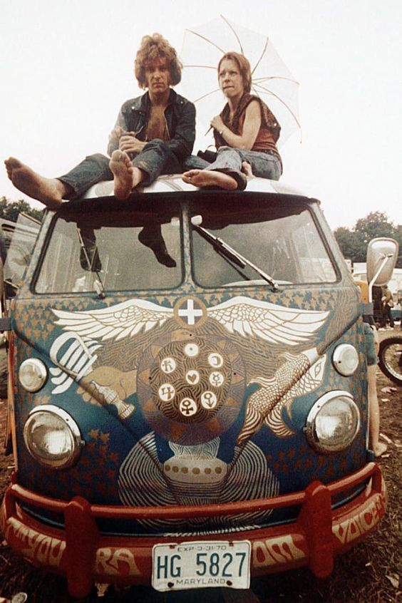

Fundada por João Lenon em 1967, em São Francisco, na Califórnia, a Kozmic Records transcende épocas com sua kombi velha e muitos LPs, é claro. Com a filosofia Flower Power desde o summer of love, aqui o saudosismo e a nostalgia não entram, pois já estão no ar. Aqui é o lugar para quem gosta de não apenas ouvir seus discos, mas sim sentí-los... Com toda fidelidade, poeira e arranhões que só um bom vinil pode oferecer. Então, se você é um vinyl lover retrô hipster de plantão, que não aguenta mais ouvir os discos do Leandro e Leonardo do seu pai, venha até nós e comece sua coleção hoje mesmo.
